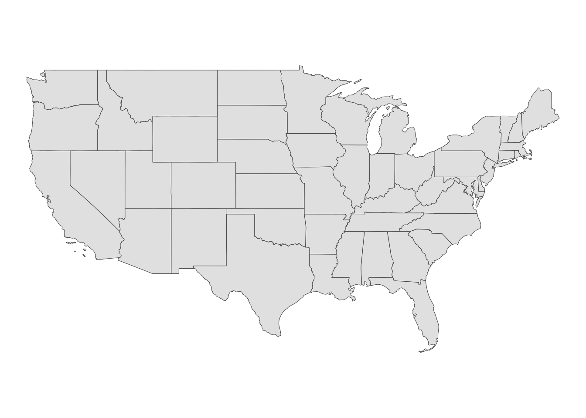
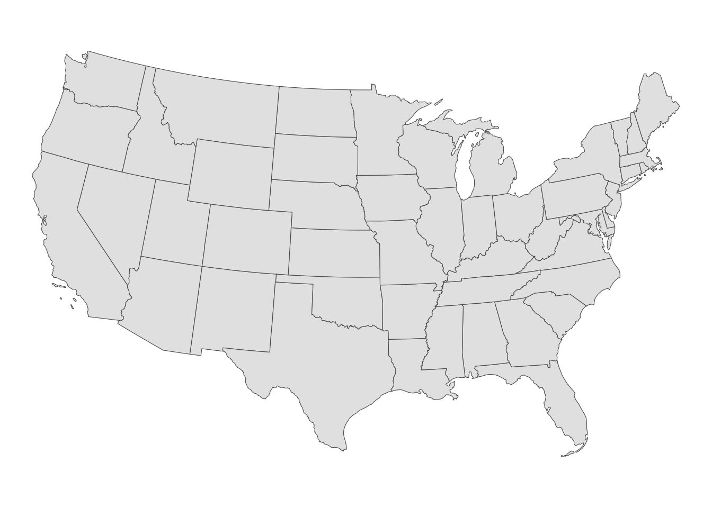
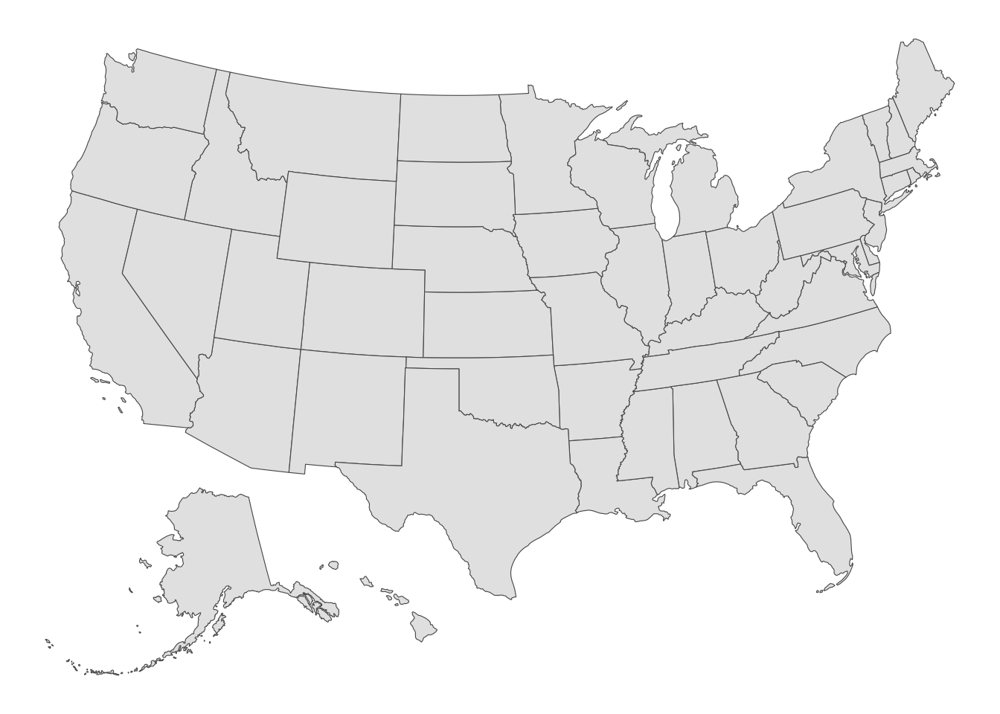
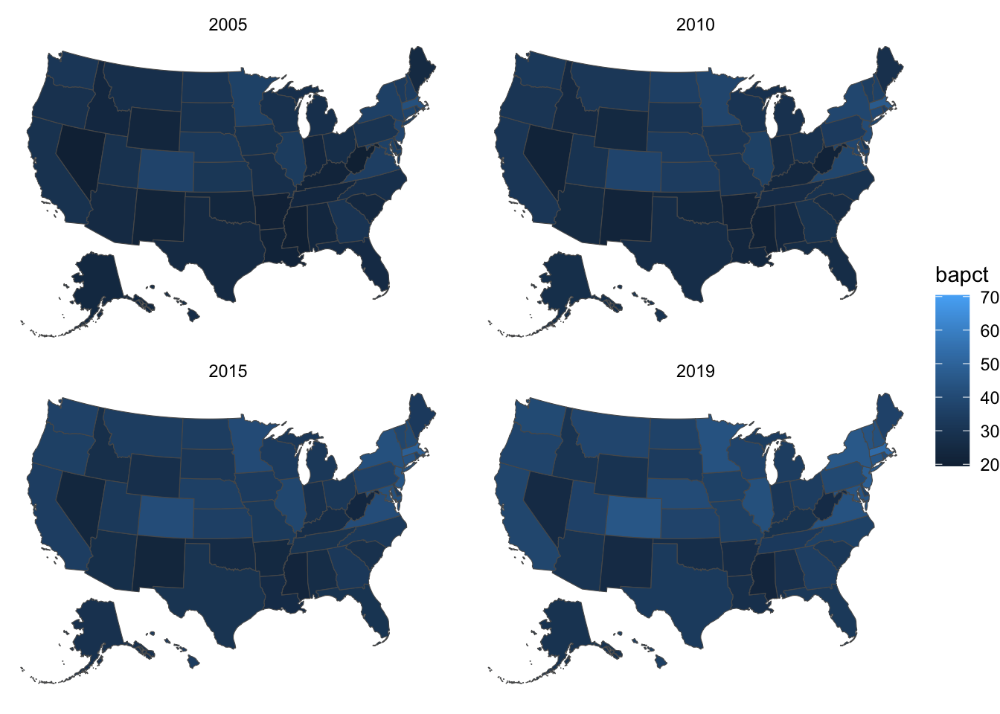
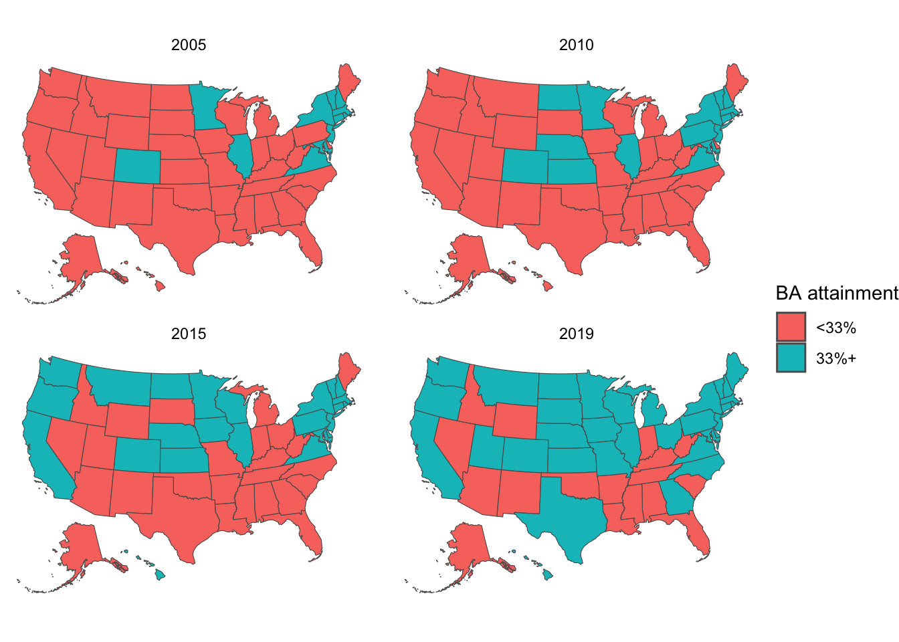
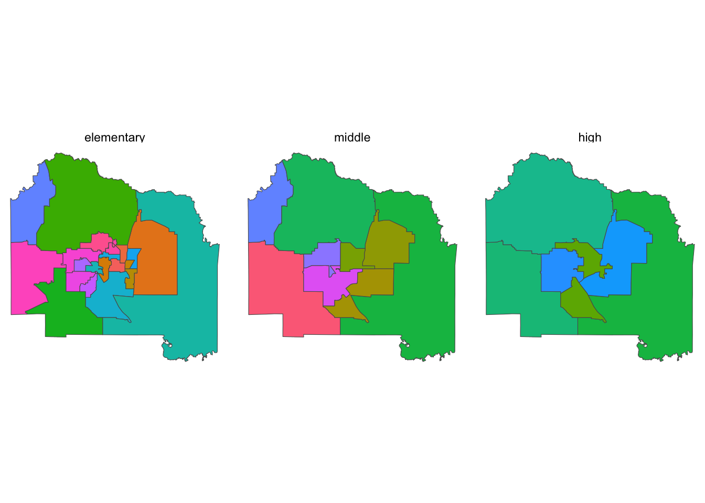
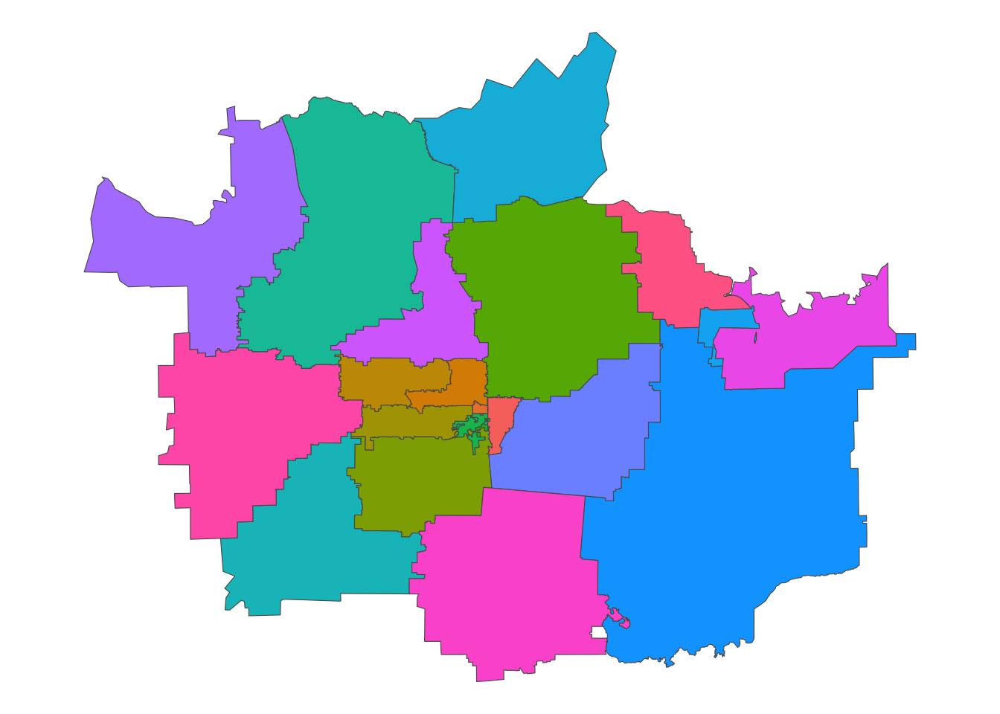

In this lesson, we’ll go over the basics of mapping in R. As with most lessons in this course, we’ll only scratch the surface of what’s possible. Mainly, we will cover four things:
Understanding the basics of spatial data and using the sf library to work with it
Projections
Basic spatial joins
Making figures using sf and ggplot2
Importantly, we won’t cover spatial statistics, which is a related, but entirely other topic. At the end of this lesson, you should be able to read in spatial data, perform some common data wrangling procedures, and make a map that can be used to visualize spatial relationships.
Let’s start!
Libraries and paths
In addition to tidyverse, we’ll use the sf library and usmap, the latter of which provides some nicely formatted geospatial data for the United States. Before you start the lesson, you’ll need to install both libraries: install.packages(c("sf", "usmap")).
NOTE Once upon a time, getting the requisite spatial software installed on your computer could be very difficult, with lots of separate installations that could be quite finicky. But these days — unless you have a strange installation of R — you should be able to just install the sf library and have things work. If you run into trouble, it’s probably some background program that needs to be updated or installed. If you end up with errors, copy and paste them into Google. You will almost certainly find others who’ve had the same problem and, hopefully (!), the solution. You can also check out the sf library webpage.
── Attaching core tidyverse packages ──────────────────────── tidyverse 2.0.0 ──
✔ dplyr 1.1.0 ✔ readr 2.1.4
✔ forcats 1.0.0 ✔ stringr 1.5.0
✔ ggplot2 3.4.2 ✔ tibble 3.1.8
✔ lubridate 1.9.2 ✔ tidyr 1.3.0
✔ purrr 1.0.2
── Conflicts ────────────────────────────────────────── tidyverse_conflicts() ──
✖ dplyr::filter() masks stats::filter()
✖ dplyr::lag() masks stats::lag()
ℹ Use the conflicted package (<http://conflicted.r-lib.org/>) to force all conflicts to become errors
library(sf)
Linking to GEOS 3.10.2, GDAL 3.4.2, PROJ 8.2.1; sf_use_s2() is TRUE
library(usmap)
Projections and choropleths
In this first section, we’ll work with a map of the United States to look at differences in Bachelor’s degree attainment across the states. But before we read in the data, let’s talk about a common format for geographic data files, the shapefile.
First of all, what is a shapefile? While we can always rely on Wikipedia for the technical answer, the gist is that it’s a special data structure that, in addition to the normal data frames we are used to working with, contains geometric information. This geographic information includes points, lines, and polygons that can be used to create multidimensional figures such as maps or to perform spatial analyses. Linking these geometric features with the data frame, a researcher can describe and analyze the spatial dimensions of data. For example, here are some questions that are similar to some that I’ve explored in the past:
How close is this high school to the nearest open admissions college?
How many colleges are within 10/50/100 miles of this census block?
Are there differences in household earnings or average degree attainment between these proximate zip codes?
Of course, there are many more types of spatial questions to ask. If you have a research question that has a spatial dimension, then you are likely to use a shapefile or another spatial data format (we use another type below). If you look inside the cb_2018_us_state directory that’s in data/geo/, you’ll see a number of files with the same name but different file endings:
While the file ending in *.shp is technically the “shapefile,” the other files contain important information and are linked to the primary shapefile. In other words, think of the collection of files as the shapefile. So keep in mind: in the future when you download and/or share a shapefile — often in a *.zip format — you need to keep/include all the other files. If you are curious about what the other files do, check out this ArcGIS page.
Read in the data
Let’s read in the data. Notice that we use a special function from the sf library, st_read() and that we use the *.shp file ending. Other than that, this should look like most of the other read functions we’ve used before. Pipes from the tidyverse work here, so after reading in the data, we’ll go ahead and lower the data frame column names (to save our pinkies from all the shift key work!) and convert the state FIPS codes, which uniquely identify each state, from character strings to integers. This will make our lives easier later when we filter our data set.
## ---------------------------## input data## ---------------------------## reading in the least detailed cartographic boundary (cb) file from 2018df_us <-st_read(file.path("data", "geo", "cb_2018_us_state_20m", "cb_2018_us_state_20m.shp")) %>%## renaming the data frame columns to all lowercaserename_all(tolower) %>%## converting state fips codes (two digit) to numbers for later filteringmutate(statefp =as.integer(statefp))
Reading layer `cb_2018_us_state_20m' from data source
`/Users/Matt/Desktop/7916/data/geo/cb_2018_us_state_20m/cb_2018_us_state_20m.shp'
using driver `ESRI Shapefile'
Simple feature collection with 52 features and 9 fields
Geometry type: MULTIPOLYGON
Dimension: XY
Bounding box: xmin: -179.1743 ymin: 17.91377 xmax: 179.7739 ymax: 71.35256
Geodetic CRS: NAD83
As it’s read in, we get a little more information that tells us:
The file path and driver (what’s understanding the data structure): ESRI Shapefile
That it’s a Simple feature collection, that is, a special data structure with 52 features (unique items: points, polygons, etc) and 9 fields (columns of information)
The Geometry type, which is this case is a MULTIPOLYGON
The coordinate dimension, which are xy here (think 2D)
How big the full area covered is, in the scale of the underlying data. Since the default for this data file is geodesic (on the globe), we get longitude (x) and latitude (y) values
The Coordinate Reference System (CRS), which determines how (if at all) the shapes are projected. In this case, they are not — they remain specified as if on a globe — with a datum (center point inside the globe) NAD83
We’ll talk a little more about projections below. First, let’s call the data frame, df_us, by itself.
We get the same information as above, but now we can see the data frame, too. This shapefile is pretty spare, giving us some basic identifying data, such as the state name and land and water area within the boundaries. In the last column, you can see the geometry, which has the geometry type (MULTIPOLYGON here), as well the beginnings of some numbers nested in parentheses. This is the extra geometry information that we can use to make our maps.
Mapping and changing projections
Let’s make our first map. The sf library is powerful because it smoothly integrates with ggplot. The new geom_* we’ll use is geom_sf(), which tells ggplot what it needs to know to make the map. Because we’re making a map and don’t really care about axes or all that (at least in this instance), we’ll also add theme_void() at the end of the call to remove everything but the map we plot.
It’s a map, but not super useful. What’s going on? Well — depending on your screen resolution — you might be able to tell that this map of the United States includes various territories. Because these span the globe, the map has to fit a huge spherical area into a smaller, flatter space. This is what we get.
Since our plan is look at degree attainment in the states, we’ll reduce our data to only include states. We’ll also start by removing Alaska and Hawaii so that we can first practice with the lower 48 or contiguous states.
## ---------------------------## lower 48 only plot## ---------------------------## filter to keep only states (fips <= 56, Wyoming) and then drop AK/HIdf_l48 <- df_us %>%filter(statefp <=56) %>%filter(statefp !=02& statefp !=15)## same plot with reduced datap <-ggplot(df_l48) +geom_sf() +theme_void()## showp

Now that we’ve limited our data and effectively zoomed in on the lower 48 states, our map is clearer and much more useful.
We have another issue, however. If you are used to looking at maps of the United States, our figure looks a little flat and elongated. The US - Canada border is very straight and the western part of the country looks sort of stretched. This is because our data was unprojected and sf had to pick a projection in order to make the figure.
What do we mean by projection? The fundamental problem of mapping is this: we live on a spherical globe (technically closer to an oblate spheroid) but want to put maps on a flat, 2D surface. Imagine peeling the skin off an orange in one piece and trying to lay it flat. If you want the peel to have the same size and everything to roughly line up, then you’ll have gaps between the edges. Alternately, you can remove the gaps and keep straight lines by stretching the peel, but then you have a stretched surface! In other words, there’s always a compromise. Most common projections try to preserve one metric:
Conformal (preserve angles)
Equal area (preserve area)
Equidistant (preserve distances between points)
There is no single correct projection: it really depends on what you want to do in your analyses. If you are calculating distances, then you need to make sure your project preserves distance. If you want to know about areas of overlapping shapes, then you will want to preserve area with the projection you use. Check out this pdf for more information about projections or this report from the U.S. Geological Survey if you really want to know more!
Alternately, if you aren’t doing any spatial analyses, then you can just select the projection you find most aesthetically pleasing. When faced with unprojected data, the sf library will by default choose an equirectangular projection in which longitudinal and latitudinal lines are straight and at right angles. This is how we get our stretched United States.
Let’s choose a different Coordinate Reference System (CRS) so that our map takes on a different shape. We’ll use the USA Contiguous Albers Equal Area Conic, which is good for North America and specifically the lower 48 states. To reset the CRS, we’ll use st_transform() with the correct EPSG numeric code for the projection we want: 5070.
## ---------------------------## transform CRS (re-project)## ---------------------------## change CRS to something that looks better for USdf_l48 <-st_transform(df_l48, crs =5070)## same plot, but should look different b/c we changed projectionp <-ggplot(df_l48) +geom_sf() +theme_void()## showp

Much nicer!
Quick exercise
Re-project and re-plot your lower 48 states map df_l48 using a CRS code of 3338 (good for Alaska) and 32136 (good for Tennessee). What happens to the map each time?
Of course, we dropped Alaska and Hawaii to make this figure and need to bring them back. A common solution is to place them somewhere under the southwestern states. We could do this ourselves, but it takes a lot of manipulation of our the geometric data. The good news is that someone has already done this work for us! Since we’re only concerned about state-level data, we’ll use the us_map() function from the usmaps library.
## ---------------------------## use usmaps to get AK/HI## ---------------------------## load usmap data for statesdf_usmap <-us_map(regions ="states")
The usmaps library has its own plotting function that uses ggplot under the hood, but since not all geospatial libraries have that, we’ll set up the data to work with sf. To do that, we’ll use the st_as_sf() function to set the underlying data as simple features data and then combine the data points into polygons using a chain of group_by(), summarise(), and then st_cast(). Run each line on its own if you want to see what’s happening with each step.
## need to set up to work with sf## start by setting up sf data frame with correct projectiondf_usmap <-st_as_sf(df_usmap, coords =c("x", "y"), crs =5070) %>%## group by state / group (some states have non-contiguous parts like islands)group_by(fips, group) %>%## combine these points into single geometrysummarise(geometry =st_combine(geometry),.groups ="drop") %>%## reset these points as polygons (think dots to lines that connect)st_cast("POLYGON")
Now that the data are set up correctly, we can run the same plotting code as before, only changing the data.
## Alaska and Hawaii now included, but moved for tighter plotp <-ggplot(df_usmap) +geom_sf() +theme_void()## showp

And now we have all the states in a nice projection, ready to make a choropleth map.
Choropleth
A choropleth map is just a map that uses color to show differences across areas. Probably the most common choropleth maps people see are during an election to show winners by political party in different precincts or states. For our example, we’ll show differences in Bachelor’s degree attainment rates for 25 to 44 year-olds from 2005 to 2019 across the states. First, we’ll read in our data, which come from the U.S. Census’s American Community Survey.
## ---------------------------## BA attainment 2005-2019## ---------------------------## read in BA attainment (25-44yo) datadf_ba <-read_csv(file.path("data", "geo", "ba_25_44.csv"),show_col_types =FALSE)## show top of datadf_ba
# A tibble: 780 × 5
stfips stabbr stname year bapct
<dbl> <chr> <chr> <dbl> <dbl>
1 1 AL Alabama 2005 23.5
2 1 AL Alabama 2006 22.6
3 1 AL Alabama 2007 23.6
4 1 AL Alabama 2008 24.1
5 1 AL Alabama 2009 24.6
6 1 AL Alabama 2010 23.8
7 1 AL Alabama 2011 24.7
8 1 AL Alabama 2012 26.2
9 1 AL Alabama 2013 25
10 1 AL Alabama 2014 25.7
# … with 770 more rows
First thing we need to do is join our new attainment data to our spatial data frame. After creating a new join variable with the same name and data type (stfips = as.integer(fips)), we can use left_join() just as we’ve done in prior lessons.
## join data to mapping datadf_usmap <- df_usmap %>%## create a join variable, stfips, that matches what's in df_bamutate(stfips =as.integer(fips)) %>%## left_join as usualleft_join(df_ba, by ="stfips")
Warning in sf_column %in% names(g): Each row in `x` is expected to match at most 1 row in `y`.
ℹ Row 1 of `x` matches multiple rows.
ℹ If multiple matches are expected, set `multiple = "all"` to silence this
warning.
For our first map, we’ll filter to the latest year, 2019. So that the color changes by BA percentage, we’ll add aes(fille = bpct) in geom_sf(). Everything else is the same as before.
## plot with one year of BA attainmentp <-ggplot(df_usmap %>%filter(year ==2019)) +geom_sf(aes(fill = bapct)) +theme_void()## showp
To show changes over time, we’ll filter in more years — 2005, 2010, 2015, 2019 — and include facet_wrap(~ year), which will split our plot into four panels, one for each year. Again, this is very similar to plotting we’ve done before with ggplot.
## plot with 4 years of BA attainmentp <-ggplot(df_usmap %>%filter(year %in%c(2005, 2010, 2015, 2019))) +facet_wrap(~ year) +geom_sf(aes(fill = bapct)) +theme_void()## showp

Just like our first figure, the differences are somewhat difficult to see. Perhaps another color gradient would help. Alternately, we can split our continuous percentages into a binary variable at some threshold. Since a fairly common national statistic of Bachelor’s degree attainment is around 1/3 of adults, we’ll pick 33% and use an ifelse() statement to create bacut.
## create new variable that's == 1 if BA attainment is >= 33%df_usmap <- df_usmap %>%## thinking ahead: use strings in yes/no options that will look good in legendmutate(bacut =ifelse(bapct >=33, "33%+", "<33%"))
This time, we’ll use our new variable bacut in the fill aesthetic. We’ll also make our legend nicer with a title using the name option with scale_fill_discrete().
## plot with 4 years of BA attainmentp <-ggplot(df_usmap %>%filter(year %in%c(2005, 2010, 2015, 2019))) +facet_wrap(~year) +geom_sf(aes(fill = bacut)) +scale_fill_discrete(name ="BA attainment") +theme_void()## showp

This last figure makes cross-sectional and diachronic changes much clearer. We could add further titles and a caption, but the figure already looks pretty good!
Quick exercise
Choose a different cut point for BA attainment and different years. Plot another small multiples plots showing changes over time.
Spatial joins
In this second section, we’ll perform a couple of simple spatial joins. With spatial work, you’ll often have one of these two situations:
Specific locations, like a school, that you want to place in its specific geographic location, such as its attendance zone or county
Two different spatial polygons, like zip codes and census tracts, that don’t perfectly align but that you want to intersect
We’ll practice both of these procedures, which aren’t too complicated if your data are properly set up, meaning that you’re using spatial data sets that use the same projection (CRS). That’s our case here, so we’re good to go. Instead of the entire country, we’ll use school attendance zones, school locations, and zip code areas in Alachua County, Florida, to practice spatial joins.
First, we’ll read it the data. Rather than using shapefiles, we’ll use GeoJSON files this time, which are a special type of JSON file (a plain text data file often used in web applications) that contain geometric information.
Read in data
## ---------------------------## Alachua County: school/zip## ---------------------------## school attendance zones; school locations; zip codesdf_zon <-st_read(file.path("data", "geo", "ac_school_zones.geojson"))
Reading layer `ac_school_zones' from data source
`/Users/Matt/Desktop/7916/data/geo/ac_school_zones.geojson'
using driver `GeoJSON'
Simple feature collection with 41 features and 9 fields
Geometry type: POLYGON
Dimension: XY
Bounding box: xmin: -82.65812 ymin: 29.41713 xmax: -82.0497 ymax: 29.94532
Geodetic CRS: WGS 84
Reading layer `ac_zipcodes' from data source
`/Users/Matt/Desktop/7916/data/geo/ac_zipcodes.geojson' using driver `GeoJSON'
Simple feature collection with 22 features and 5 fields
Geometry type: MULTIPOLYGON
Dimension: XY
Bounding box: xmin: -82.76944 ymin: 29.40396 xmax: -81.88346 ymax: 30.00484
Geodetic CRS: WGS 84
Points in polygons
First, we’ll plot each set of school attendance zones with school locations as points. We’ll explicitly convert the school level variable into a factor() so that we can order the plot from elementary to middle to high school — rather than alphabetical order.
## plot school zones + schoolsp <-ggplot(df_zon) +## convert school level to a factor so we can order itfacet_wrap(~factor(level, levels =c("elementary","middle","high"))) +## change the color of zones by their code (just for variety)geom_sf(aes(fill = code)) +## remove legend since it doesn't really tell us muchscale_fill_discrete(guide ="none") +theme_void()## showp

Now that we’ve seen the attendance zones, let’s plot the zip code areas.
## plot zip codes zones + schoolsp <-ggplot(df_zip) +geom_sf(aes(fill = zip)) +scale_fill_discrete(guide ="none") +theme_void()## showp

Since zip codes are really about postal routes — meaning they are lines that have been converted into loose “areas” — the overall shape is a little strange and not as easily recognizable as Alachua County.
Let’s answer this question: Which zip code contains the most schools? To begin, we need to join our school data set to the zip code data set. But instead of joining on a shared key like we’ve done in prior lessons, we want schools to join based on the zip code they fall inside.
To join school locations to the zip code areas in this way, we use st_join() which is like left_join(), but takes into account the geometry column in the data.
## join schools to zip codesdf_sch_zip <-st_join(df_sch, df_zip)## showdf_sch_zip
Simple feature collection with 41 features and 14 fields
Geometry type: POINT
Dimension: XY
Bounding box: xmin: -82.61531 ymin: 29.52004 xmax: -82.09089 ymax: 29.83443
Geodetic CRS: WGS 84
First 10 features:
objectid.x schoolcode facility
1 1 010461 HIGH SPRINGS ELEMENTARY AND MIDDLE SCHOOL
2 3 010520 MEADOWBROOK ELEMENTARY SCHOOL
3 4 010271 SANTA FE HIGH SCHOOL
4 5 010221 MEBANE MIDDLE SCHOOL
5 7 010161 ALACHUA ELEMENTARY SCHOOL
6 8 010561 TALBOT ELEMENTARY SCHOOL
7 9 010041 FOSTER ELEMENTARY SCHOOL
8 10 010341 RAWLINGS ELEMENTARY SCHOOL
9 11 010331 GLEN SPRINGS ELEMENTARY SCHOOL
10 12 010481 FT CLARKE MIDDLE SCHOOL
function_ grades fulladdr addressid grade2019
1 ELEMENTARY/MIDDLE PK-8 1015 N MAIN ST 6989 A
2 ELEMENTARY PK-5 11525 NW 39TH AV 116451 A
3 HIGH 9-12 16213 NW US HWY 441 6988 B
4 MIDDLE 6-8 16401 NW 140TH ST 6890 C
5 ELEMENTARY 3-5 13800 NW 152ND PL 62717 C
6 ELEMENTARY PK-5 5701 NW 43RD ST 51416 B
7 ELEMENTARY PK-5 3800 NW 6TH ST 22495 B
8 ELEMENTARY PK-5 3500 NE 15TH ST 3712 C
9 ELEMENTARY PK-5 2826 NW 31ST AV 7258 C
10 MIDDLE 6-8 9301 NW 23RD AV 30480 B
link objectid.y po_name zip shape__area
1 https://www.sbac.edu/Page/11863 15 HIGH SPRINGS 32643 2764000220
2 https://www.sbac.edu/meadowbrook 4 GAINESVILLE 32606 489129738
3 https://www.sbac.edu/santafe 9 ALACHUA 32615 3966453434
4 https://www.sbac.edu/mebane 9 ALACHUA 32615 3966453434
5 https://www.sbac.edu/alachua 9 ALACHUA 32615 3966453434
6 https://www.sbac.edu/talbot 16 GAINESVILLE 32653 1082671494
7 https://www.sbac.edu/foster 7 GAINESVILLE 32609 3423179965
8 https://www.sbac.edu/rawlings 7 GAINESVILLE 32609 3423179965
9 https://www.sbac.edu/glensprings 3 GAINESVILLE 32605 273759072
10 https://www.sbac.edu/fortclarke 4 GAINESVILLE 32606 489129738
shape__length geometry
1 399292.3 POINT (-82.58993 29.83443)
2 158624.8 POINT (-82.46278 29.68815)
3 433830.7 POINT (-82.52388 29.80632)
4 433830.7 POINT (-82.49382 29.80557)
5 433830.7 POINT (-82.4924 29.79456)
6 248871.3 POINT (-82.38717 29.70745)
7 347927.6 POINT (-82.3318 29.68818)
8 347927.6 POINT (-82.30691 29.68426)
9 128932.4 POINT (-82.36473 29.68239)
10 158624.8 POINT (-82.44178 29.67324)
Now that we’ve placed schools in zip codes, we can answer the question: which zip code has the most schools? Other than the second line of code, st_drop_geometry(), which removes the geometry features of the data set and makes it a plain data frame that’s much easier to manipulate, the rest of the dplyr chain should look familiar. To answer our question, we:
group_by() zip column so that we are looking within zip code
summarise() and use n() to count the number of rows within each zip code, which, after our join, is the number of unique schools
arrange() using desc() so that the zip code with the maximum number is at the top of the printed data frame
## what zip code has the most schools?df_sch_zip %>%## drop geometry so that we are left with simple data framest_drop_geometry() %>%## group by zip codegroup_by(zip) %>%## use n() to get number of rows (i.e., schools) in each zip groupsummarise(num_schools =n()) %>%## arrange results in descending order so that max is firstarrange(desc(num_schools))
Rerun the last bit of code, but store the results in a tibble this time. Join the tibble back to the df_zip sf object and make a plot that color codes each zip code by the number of schools it contains.
Overlapping polygons
For this last task, we’ll zoom into a single school zone, Lake Forest Elementary. We’ll plot it first.
## what zip code has the most schools?p <-ggplot(df_zon %>%filter(facility =="Lake Forest Elementary")) +geom_sf() +theme_void()## showp
Knowing that zip codes and schools aren’t perfectly aligned, that is, a single school zone can be made up of multiple zip code areas and vice versa, we ask: how many zip codes are make up the Lake Forest Elementary” attendance zone?
Since we have two sets of polygons, we’ll join using st_intersection(). This particular join will use the left data frame as the starting point and then keep the parts of the second data frame that fit within (intersect) the first. Therefore, order matters here.
Once we’ve done that, we’ll plot the intersected data frame and fill using zip so that we can see the zip code areas clearly.
## join schools to zip codesdf_zon_zip <-st_intersection(df_zon, df_zip)
Warning: attribute variables are assumed to be spatially constant throughout all
geometries
## what zip code has the most schools?p <-ggplot(df_zon_zip %>%filter(facility =="Lake Forest Elementary")) +geom_sf(aes(fill = zip)) +scale_fill_discrete(name ="Zip Code") +theme_void()## showp
Now we can see that the Lake Forest Elementary attendance zone is made up of three zip codes: mostly 32609 and 32641 with a little bit of 32640 in the southeast corner. We didn’t project our data using an area-preserving projection before doing these joins, so we would want to be careful computing relative areas (though at this very small area, the projected differences aren’t likely to change much).
Further information
As I said at the beginning of the lesson, we’ve only started with the kinds of spatial analyses possible in R. If you want to learn more, you might check out this online resource or this book.
Quick exercise
Flip the order of df_zon and df_zip in st_intersection() in order to see how many school zones are in each zip code. Choose a zip code that covers more than one elementary zone and plot it, color coding the unique elementary school zones.